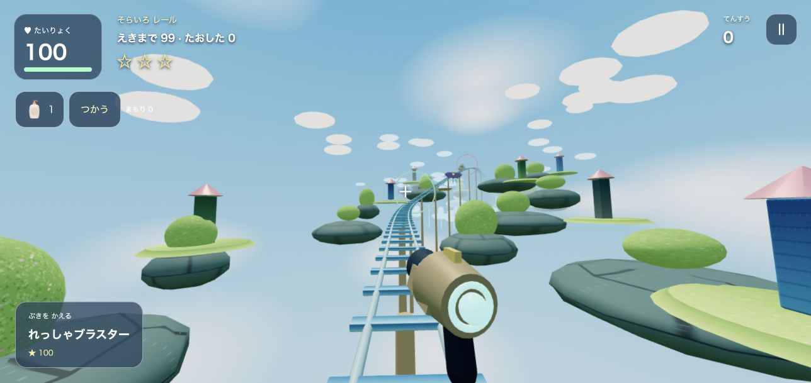
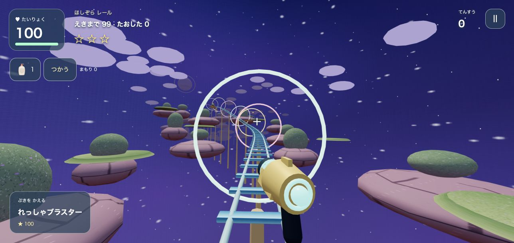

まえ・うしろへ あるく
したから うえへ スワイプで まえ。うえから したへ スワイプで うしろ。ゆびを おいたままに すると あるきつづける。スワイプが みじかいと ゆっくり、ながいと はやく。はなすと とまる。
はじめての ぼうけんも、これを よめば だいじょうぶ。スマホは よこむきに して、「はじめる」を おそう。
れっしゃは じどうで レールを はしる。タップか クリックで てきを うとう！ 1めんの あとは そらの コース、2めんの あとは ほしぞらの コース。えきに つくと ステージクリア！ 3つめの かけらを あつめたら、にじのほしを もとに もどそう！ かけらを ひろうだけでは、ボスの とびらは ひらかないよ。
モンスターは、1めんに27たい、2めんに42たい、3めんに62たい。これとは べつに ボスが 1たいずつ いるよ。ボスが なかまを よぶことも ある。
うつ・あるく ボタンは ないよ。ゲームの がめんを、ゆびで そうさしよう。アイテムや ちずの ボタンは、べつに タップしてね。
したから うえへ スワイプで まえ。うえから したへ スワイプで うしろ。ゆびを おいたままに すると あるきつづける。スワイプが みじかいと ゆっくり、ながいと はやく。はなすと とまる。
1ほんの ゆびを ひだり・みぎへ スワイプ。いどうしながら よこへ なぞっても、むきを かえられる。
うちたい ばしょを タップ。モンスターを タップすると、その ほうこうへ たまが とぶ。あるく ゆびは はなさず、べつの ゆびで タップしても うてるよ。かべの むこうには あたらない。
2ほんを ちかづけると まえへ。ひろげると うしろへ。2ほんを おなじ むきに よこへ なぞると、むきを かえずに カニあるき。はなすと とまる。
「ちず」で おおきく する。もういちど おすと もどる。ちずを みている あいだは とまる。スイッチへ ちかづくと「おす」が でるよ。
アイテムの えを タップし、つかいたい ものを えらんで「つかう」。ぶきの えを タップすると、もっている ぶきが きりかわる。まだ ひろっていない ぶきは つかえない。
ようがんの ちかくには、ジャンプだい・うごく あしば・ほのおよけが あるよ。スマホでは、あんぜんな みちを さがして すすもう。
あるく：ダブリューで まえ、エスで うしろ、エーで ひだり、ディーで みぎ。マウスで むきを かえ、ひだりクリックを おしたままで れんしゃ。
はじめると マウスが ゲームの なかで うごくよ。ひとやすみすると、マウスが ふつうに もどる。
ぶきの パーツを ひろうと、さらに パワーアップするよ。
| アイテム | はたらき | つかいかた |
|---|---|---|
| ポーション | たいりょくを かいふく | えらんで「つかう」 |
| おおきな ポーション | たいりょくを たくさん かいふく | ポーションを えらんで「つかう」。たいりょくが 50より ひくいとき、または ふつうの ポーションが ないときに つかわれる |
| どくけし | どくを なおす | えらんで「つかう」 |
| ほのおよけ | しばらく ようがんの ダメージを へらす | ひろうと はたらく |
| まもりのたま | こうげきの ダメージを へらす | ひろうと はたらく |
| キャンディ | しばらく いどうが はやくなる | ひろうと はたらく |
| にじのたま | しばらく こうげきが つよくなる | ひろうと はたらく |
あたらしい アイテムを ひろうと、せつめいが でて ゲームが とまる。「わかった！」で もどろう。
モンスターは へやを うごいている。みつかると おいかけてくる。うつと、はなれていても きづかれるよ。たいりょくが へったら、はやめに ポーションを つかおう。
たいりょくが 0になると、「ざんねん！もういっかい！」で とまる。「もういっかい」で その ステージの はじめから。「やめる」で タイトルへ もどる。
よこむきに して、「はじめる」を タップ。せつめいが でているなら「わかった！」を おそう。スワイプの あとは、ゆびを おいたままに してみよう。
「はじめる」を おしたあとに おとが はじまる。たんまつの おんりょう・マナーモード・ブラウザの おとを たしかめてね。
ほかの タブや アプリを とじてみよう。ゲームは たんまつに あわせて えの こまかさを じどうで かえるよ。たんまつによっては、うまく うごかないことも ある。
あくむの かいほうだけは この ブラウザに のこる。ぼうけんの じどうセーブは ないよ。ページを とじたり、よみなおすと はじめから。ゲームオーバーでは、あそんでいた ステージから やりなおせる。
おといあわせ ページから、たんまつと ブラウザ、どんな うごきを したかを おしえてね。なまえ・じゅうしょ・パスワードなどは かかないでね。とうこうには アカウントが ひつよう。
2めんの わきみちに、かべで かこまれた さむらいの へやが ある。けいこくつきの とびらだけが いりぐち。よこや うらからは はいれないよ。かまえたら よこへ よけ、おおきく ふりかぶったら はなれよう。とびらの けいこくを よんで、あけるか えらぼう。たおすと さいきょうの カタナが てにはいる！ ちかくの てきを まとめて なぎはらえる。とおくの てきや かべの むこうには とどかないよ。むりに たたかわず、さきへ すすんでも だいじょうぶ。
はじめるまえに タイトルで えらべるよ。「やさしい」は いままでと おなじ。ボスと さむらいは 1たいずつ。むずかしさに あわせて たいりょくも ふえる。
| むずかしさ | てきの かず | てきの たいりょく |
|---|---|---|
| やさしい | 1ばい | 1ばい |
| ふつう | 1.5ばい | 1.3ばい |
| むずかしい | 2ばい | 1.5ばい |
| あくむ | 2.5ばい | 2ばい |
「むずかしい」で さいごまで クリアすると「あくむ」が ひらく！ ひらいた きろくは、この ブラウザに のこるよ。ブラウザの データを けすと、きろくも きえる。かずの はすうは きりあげるよ。
ボスを たおすと「でんち」が おちる。ほしのかけらと でんちを ひろって、れっしゃへ。ちかづいて「でんちを セット」を おそう！ コースの ながさは 4ばい、はやさは 1.5ばいに パワーアップ！ そらいろ レールは やく53びょう、ほしぞら レールは やく61びょう。れっしゃは じどうで はしる。スワイプで みまわし、タップで てきを うとう。ポーションも つかえるよ。

あおぞらと くも、うかぶ しま。のぼって くだって、こうじょうへ！
れっしゃだけ あそぶ ↗
ほしぞら、わくせい、ひかる リング。よるの おしろへ かけぬけよう！
れっしゃだけ あそぶ ↗えきに つくと つぎの ステージへ。さいごは にじの レールで かえろう。れっしゃで たおれたら、その コースを やりなおせるよ。
スマホや タブレットは、ホームがめんに ついかすると、アイコンから すぐ あそべるよ。たいおうした ブラウザでは、アドレスの バーが ない ひろい がめんに なるよ。ゲームは よこむきで あそぼう。
サファリで ゲームを ひらく → きょうゆうの ボタン →「ホームがめんに ついか」。ひょうじが あれば「ウェブアプリとして ひらく」を オンにして ついかしよう。
クロームで ゲームを ひらく → メニュー →「ホームがめんに ついか」または「アプリを インストール」。ひょうじは ブラウザで ちがうよ。
ホームがめんへの ついかは、オフラインで あそべる きのうでは ないよ。つうしんできる じょうたいで あそぼう。セーブは ないので、ゲームを とじると ぼうけんは はじめから。
ゲームを ひらく ↗